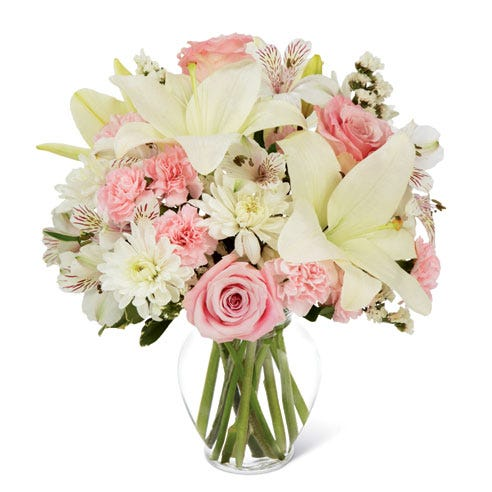
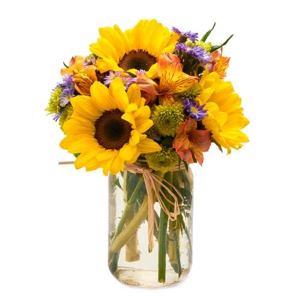

Welcome to Lindsey's Flower Shop, where you can find any flower arrangement you like.
This month's specials:
|  |
Pink Rose White Lily Bouquet at $45 This elegant white lily flower bouquet is a classic way to show someone you care with an affordable gift. The beauty of this freshly cut flowers centerpiece will add serenity to your home. Hand-delivered from a local florist, this arrangement features light-pink rose, chrysanthemum, statice, and lily blooms. This luxury white lilies bouquet features pops of color with whisper soft pink carnation blossoms and rose selections |
|  |
Sunflower Mason Jar Bouquet at $50 Feel as if you're walking through a field of sunflower blooms and more. These inexpensive mixed flowers bouquet will evoke sunshine that will brighten up any home or office or someone special and deserving! Warm fall hues, seasonal and fresh cut alstroemeria mix with colorful pom blossoms for a hand delivered farm inspired flower arrangement that's certain to make one smile. Both affordable and touching, it feels as though the countryside comes indoors with this display. The jar can be used afterwards for whatever your recipient wants! |